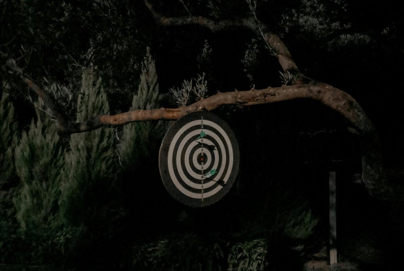

Plateforme Diaspo'Actif
La plateforme internationale de collaboration et de mobilisation des diasporas. Un espace sécurisé où les projets, les idées et les opportunités se partagent, se développent et se concrétisent.
La plateforme met en relation tous les acteurs du développement

Faire de chaque investissement un levier de développement

Le développement durable d'un territoire ne peut reposer uniquement sur les financements publics ou privés. Il doit s'appuyer sur une coopération forte entre les collectivités, les entrepreneurs, les citoyens et la diaspora.
Plateforme Diaspo'Actif souhaite devenir cette passerelle de confiance qui transforme l'attachement à son pays d'origine en investissements structurés, sécurisés et créateurs de prospérité.
Le premier réseau international de coopération de la diaspora
Construire le premier réseau international de coopération entre la diaspora, les collectivités territoriales et les partenaires économiques — afin de faire de chaque investissement un levier de développement local, de création d'emplois et de croissance durable.